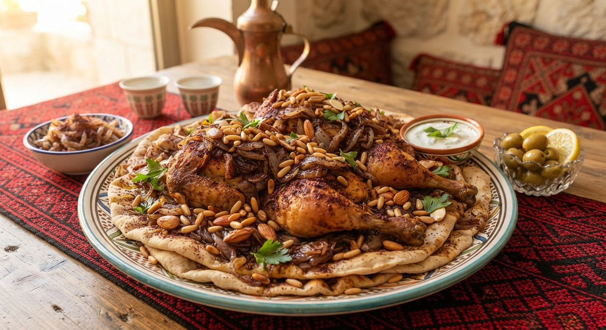

Home
Palestinian Musakhan

Description
Palestinian Musakhan is a deeply traditional and comforting dish consisting of roasted chicken baked with an abundance of sweet, caramelized onions flavored with tart sumac, rich olive oil, and toasted pine nuts, all piled generously on top of flat Taboon bread.
Ingredients
- 1 whole chicken, cut into quarters
- 1 kg onions, thinly sliced
- 1 cup high-quality extra virgin olive oil
- 4-5 tablespoons ground Sumac
- Taboon bread or flatbread
- Salt and black pepper to taste
- Toasted pine nuts for garnish
Steps
- Boil or bake the chicken pieces with some basic aromatics until tender, then shred or keep as quarters.
- In a large wide pan, sauté the sliced onions in a generous amount of olive oil over low heat until completely soft and caramelized.
- Add plenty of sumac, salt, and pepper to the caramelized onions and mix well.
- Dip the flatbread into the remaining flavored olive oil and onion mixture, then place it on a baking sheet.
- Spread the sumac-onion mixture and the chicken pieces over the bread.
- Bake in the oven until the bread edges are crispy and the chicken is nicely golden, then garnish with toasted pine nuts.